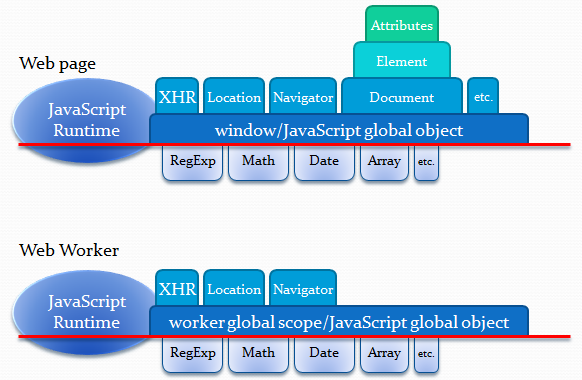

Monkeys in the Machine
JavaScript, Promises, and WebWorkers
To be, or not to be ...

Infinite Monkey Theorem
“For years there has been a theory that millions of monkeys typing at random on millions of typewriters would reproduce the entire works of Shakespeare. The Internet has proven this theory to be untrue.”

Monkeys v1
(function() {
createRandomPopulation();
selectParentsForNextGeneration();
breedNextGeneration();
if ( theyCanWriteHamlet() ) {
alert( 'done!' );
} else {
selectParentsForNextGeneration();
breedNextGeneration();
// ... iterate 5000+ times
}
})();
Monkeys v1 will kill your machine
- The browser is single-threaded
- The iterations above expand to a monolithic application of several thousand lines
- Any browser UI will become immediately unresponsive
- The browser will kill the monkeys before they're done
Monkeys v2
(function() {
createRandomPopulation();
function createNextGeneration() {
selectParentsForNextGeneration();
breedNextGeneration();
if ( theyCanWriteHamlet() ) {
alert( 'done!' );
} else {
window.setTimeout( createNextGeneration, 10 );
}
}
createNextGeneration();
})();
Monkeys v2 will work
… kinda
- The browser is still single-threaded
- With several thousand iterations, this will take a long, long time
- The solution isn't optimized for your hardware.
Monkeys v3
(function() {
createRandomPopulation();
for ( var worker in workers ) {
worker.postMessage( JSON.stringify( { 'method': 'breedNext' } ) );
}
$.when.apply( $, workers ).then( function() {
alert( 'done' );
} );
})();
Monkeys v3 is the optimal solution
- Can use All of the processing power of your machine
- Doesn't block the UI thread
- Completely clean global scope per worker
Walkthrough

Full code is available on GitHub
Components
- Workers
- Promises
- Genetic algorithm script
- Task runner (for supervising workers)
- WebWorker script
- Main program script
HTML5 WebWorker
Promises

Genetic Algorithms
( function( window, undefined ) {
/**
* Represent a single genome.
*
* @param {string} text
* @param {string} targetText
* @constructor
*/
function Genome( text, targetText) {
var SELF = this,
fitness;
/**
* Calculate the fitness of a single genome string by calculating
* its total distance from the target genome.
*
* Lower numbers are considered "more fit."
*/
function recomputeFitness() {
if ( null !== text && null !== targetText ) {
var diffs = 0;
for ( var i = 0, l = targetText.length; i < l; i++ ) {
if ( targetText[i] !== text[i] ) {
var textDiff = text.charCodeAt( i ) -
targetText.charCodeAt( i );
diffs += Math.pow( textDiff, 2 );
}
}
fitness = diffs;
} else {
fitness = Number.MAX_VALUE;
}
}
SELF.__defineGetter__( 'text', function() {
return text;
} );
SELF.__defineSetter__( 'text', function( value ) {
text = value;
recomputeFitness();
} );
SELF.__defineGetter__( 'targetText', function() {
return targetText;
} );
SELF.__defineSetter__( 'targetText', function( value ) {
targetText = value;
recomputeFitness();
} );
SELF.__defineGetter__( 'fitness', function() {
return fitness;
} );
// Initialize fitness
recomputeFitness();
}
window.Shakespeare = window.Shakespeare || {};
window.Shakespeare.Genome = Genome;
} )( this );
Task Runner
( function( windows, $, undefined ) {
var document = window.document;
/**
* Build a ZooKeeper task runner.
*
* @returns {{populate: populate, run: run, cleanup: cleanup}}
* @constructor
*/
function ZooKeeper() {
var _workers = [],
_generation = 1,
_rate = 0,
_start = 0,
_population = [],
_population_number = 0;
/**
* Actually iterate across the population, using a web worker
* to manage the loops and binding .promise callbacks to
* notify the UI.
*
* @returns {$.Deferred}
*/
function run() {
var deferred = $.Deferred();
// Set up our initial environment
_generation = 1;
_rate = 0;
_start = Math.floor( Date.now() / 1000 );
// Set up workers if they don't exist
if ( _workers.length === 0 ) {
for ( var i = 0; i < 3; i++ ) {
_workers.push( new Worker( 'assets/scripts/worker.js' ) );
}
}
// Start running steps
_next( deferred );
// Return a promise so we can bind events
return deferred.promise()
}
/**
* Run the next step
*
* @param {$.Deferred} deferred
*/
function _next( deferred ) {
// Run a step and wait until it's complete.
_step().done( function( best ) {
if ( undefined === best ) {
deferred.reject();
return;
}
if ( 0 === best.fitness ) {
deferred.resolveWith( { 'generation': _generation, 'generation_rate': _rate, 'best': best.text } );
} else {
deferred.notifyWith( { 'generation': _generation, 'generation_rate': _rate, 'best': best.text } );
// Iterate
_generation += 1;
_rate = _generation / Math.max( 1, Math.floor( Date.now() / 1000 ) - _start );
_next( deferred );
}
} );
}
/**
* Perform an iteration
*/
function _step() {
var deferred = $.Deferred(),
promises = [],
initial = _front_runners(),
_descendants = [];
for ( var i = 0, l = _workers.length; i < l; i++ ) {
var worker_promise = $.Deferred();
// Set the worker's onmessage handler manually to prevent any overlap
_workers[ i ].onmessage = ( function( worker, promise, initial ) {
return function( event ) {
var data = window.JSON.parse( event.data );
// Combine our arrays to make sure the the new population is built up out of generated children
_descendants = _descendants.concat( data.children );
if ( _descendants.length >= _population.length ) {
promise.resolve();
} else {
worker.postMessage( window.JSON.stringify( { 'method': 'spawn', 'parents': initial, 'target': _population[0].targetText } ) );
}
}
} )( _workers[i], worker_promise, initial );
// Kick off an initial iteration for the worker.
_workers[ i ].postMessage( JSON.stringify( { 'method': 'spawn', 'parents': initial, 'target': _population[0].targetText } ) );
promises.push( worker_promise.promise() );
}
// After the workers have all completed their tasks, complete the step itself
$.when.apply( $, promises ).then( function() {
_descendants.sort( _genome_comparator );
_descendants = _descendants.slice( 0, _population_number );
// Update the population to be the descendant generation
_population = _descendants;
// Resolve our step with the best child out of the descendant array
deferred.resolve( _descendants.shift() );
} );
// Return a promise so we can bind event handlers
return deferred.promise();
}
/**
* Expose our public methods
*/
return {
populate: populate,
run: run,
cleanup: cleanup
};
}
window.Shakespeare.ZooKeeper = ZooKeeper;
} )(this, jQuery );
WebWorker
// Import scripts for managing the Genome object and calculating genetics matches
importScripts( 'shakespeare.genome.js' );
var probabilities = {
cross_over: 0.85,
mutation: 0.50
},
population = [],
maxFitness = 0,
sumOfMaxMinusFitness = 0;
onmessage = function ( event ) {
var data = JSON.parse( event.data );
switch ( data.method ) {
case 'cleanup':
// Close out the worker
self.close();
break;
case 'spawn':
// Collect our children
var children = create_children( data.parents, data.target );
// Send our children back to the task runner
postMessage( JSON.stringify( { 'children': children } ) );
break;
}
};
/**
* Create a pair of child strings given an initial array of high-fitness candidates.
*
* @param {Array} initial
* @param {String} target
*/
function create_children( initial, target ) {
var children = [];
for ( i = 0, l = initial.length; i < l; i ++ ) {
maxFitness = Math.max( maxFitness, initial[i].fitness );
}
maxFitness += 1;
for ( i = 0, l = initial.length; i < l; i ++ ) {
sumOfMaxMinusFitness += ( maxFitness - initial[i].fitness );
}
// Expose the initial population so we can reference it elsewhere
population = initial;
// Find two high-quality parents at random
var father = random_parent(),
mother = random_parent();
// Create a mutation via crossover
if ( Math.random() < probabilities.cross_over ) {
var cross_over = Math.floor( Math.random() * father.text.length ) + 1;
children.push( new Shakespeare.Genome( father.text.substring( 0, cross_over ) + mother.text.substring( cross_over ), target ) );
children.push( new Shakespeare.Genome( mother.text.substring( 0, cross_over ) + father.text.substring( cross_over ), target ) );
} else {
children.push( father );
children.push( mother );
}
// Potentially mutate the children
if ( Math.random() < probabilities.mutation ) {
children[ 0 ] = mutate( children[ 0 ] );
}
if ( Math.random() < probabilities.mutation ) {
children[ 1 ] = mutate( children[ 1 ] );
}
// Return the children
return children;
}
/**
* Mutate a child genome.
*
* @param {Shakespeare.Genome} child
* @returns {Shakespeare.Genome}
*/
function mutate( child ) {
var text = child.text,
index = Math.floor( Math.random() * text.length ),
upOrDown = Math.random() <= 0.5 ? - 1 : 1,
newChar = String.fromCharCode( text.charCodeAt( index ) + upOrDown ),
newString = '';
for ( i = 0; i < text.length; i ++ ) {
if ( i == index ) {
newString += newChar;
} else {
newString += text[i];
}
}
child.text = newString;
return child;
}
Main Program Script
( function( window, $, undefined ) {
var document = window.document,
Shakespeare = window.Shakespeare,
// Variables used by the iterative processor
queue = null,
runner = null;
/**
* Don't just sit there, get things started.
*
* @param {string} text
*/
function startTyping( text ) {
// Instantiate the task runner
runner = new Shakespeare.ZooKeeper();
runner.populate( text, 200 );
// Start running the task
queue = runner.run();
// Update progress
queue.progress( function() {
updateProgress();
} );
// On complete
queue.done( function() {
updateProgress();
runner.cleanup();
runner = null;
queue = null;
} );
}
} )( window, jQuery );